# Verificar, instalar y activar el paquete "tidyverse"if (!require(tidyverse)) {install.packages("tidyverse")}library(tidyverse)# Verificar, instalar y activar el paquete "kableExtra"if (!require(kableExtra)) {install.packages("kableExtra")}library(kableExtra)# Verificar, instalar y activar el paquete "readxl"if (!require(readxl)) {install.packages("readxl")}library(readxl)library(gridExtra)
2 DISTRIBUCIÓN NORMAL
La distribución normal, también conocida como distribución gaussiana o campana de Gauss, es la distribución de probabilidad continua más importante en la estadística.
Su importancia radica en que muchos fenómenos naturales, sociales y económicos siguen este patrón.
La distribución normal es la distribución de probabilidad continua más usada en estadística y una herramienta fundamental para modelar una inmensa variedad de fenómenos en las ciencias, la ingeniería y la economía. Su popularidad se debe a una propiedad matemática conocida como el Teorema del Límite Central, que establece que la suma o el promedio de un gran número de variables aleatorias independientes (sin importar su distribución original) tiende a seguir una distribución normal.
Características Clave
La distribución normal es un tipo de distribución de probabilidad continua. Esto significa que la variable aleatoria puede tomar cualquier valor dentro de un rango determinado. Se representa por una curva simétrica en forma de campana, donde la mayor parte de los datos se agrupan alrededor del valor central.
Forma de Campana: La distribución es simétrica alrededor de su media, creando una curva con forma de campana. El punto más alto de la campana es la media.
Media, Mediana y Moda Coincidentes: En una distribución normal perfecta, estos tres valores son iguales y se encuentran en el centro de la curva.
Asintótica al Eje Horizontal: La curva se extiende indefinidamente en ambas direcciones, acercándose al eje x pero sin llegar a tocarlo.
Regla Empírica: Alrededor del 68% de los datos se encuentran dentro de una desviación estándar de la media (\mu \pm \sigma), el 95% dentro de dos desviaciones estándar (\mu \pm 2\sigma), y el 99.7% dentro de tres desviaciones estándar (\mu \pm 3\sigma).
Parámetros
La distribución normal está completamente definida por dos parámetros:
Media (\mu): Indica la ubicación del centro de la curva y el valor más probable.
Varianza\sigma^2 o Desviación Estándar (\sigma): Mide la dispersión o variabilidad de los datos. Una \sigma grande resulta en una curva más ancha y aplanada, mientras que una \sigma pequeña crea una curva más estrecha y alta.
Fórmulas
La fórmula principal de la distribución normal es la función de densidad de probabilidad (FDP). Esta función no calcula la probabilidad de un punto exacto, sino la densidad de probabilidad en ese punto.
e es el número de Euler (aproximadamente 2.71828).
\pi es la constante pi (aproximadamente 3.14159).
Para calcular probabilidades, se utiliza la distribución normal estándar, que tiene una media de 0 y una desviación estándar de 1. Cualquier variable normal puede estandarizarse usando la siguiente fórmula:
Fórmula de Estandarización (puntuación Z):
Z = \frac{x - \mu}{\sigma}
La puntuación Z nos dice cuántas desviaciones estándar está un valor dado de la media. Luego, se usan tablas o software estadístico para encontrar las probabilidades correspondientes.
EJERCICIOS
Ejercicio 1.1
Un investigador científico informa que unos ratones vivirán un promedio de 40 meses cuando sus dietas se restringen drásticamente y después se enriquecen con vitaminas y proteínas. Suponiendo que las vidas de tales ratones se distribuyen normalmente con una desviación estándar de 6.3 meses, encuentre la probabilidad de que un ratón dado vivirá:
ggplot(data.frame(x = rango), aes(x = x)) +stat_function(fun = dnorm, args =list(mean = media, sd = desviacion_estandar), n =500, color ="black") +geom_area(stat ="function", fun = dnorm, args =list(mean = media, sd = desviacion_estandar),fill ="#57A0FF", xlim =c(rango[1], 28), alpha =0.5) +labs(title ="Distribución Normal",subtitle ="Probabilidad de vivir menos de 28 meses",x ="Vida en meses",y ="Densidad de Probabilidad") +theme_bw() +geom_vline(xintercept =28, linetype ="dashed", color ="#0000FF") +geom_text(aes(x =28, y =0.01, label ="28 meses"), hjust =1.1, vjust =-1)
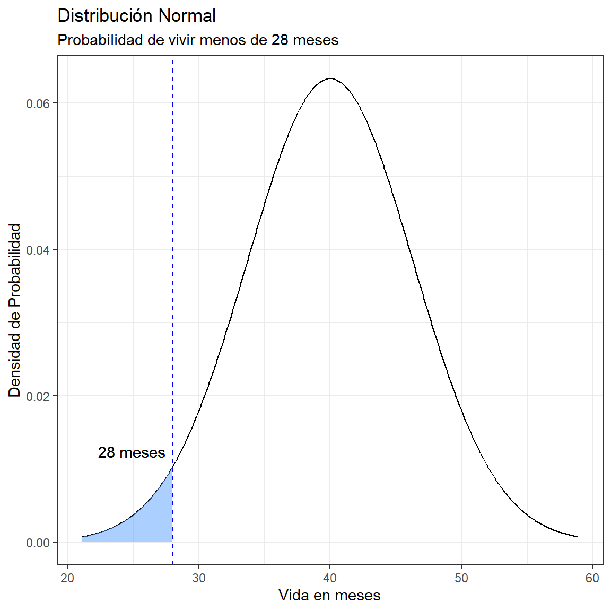
¿Cuál es la probabilidad de que un ratón dado viva entre 37 y 49 meses?
Ver código
prob_entre_37_49 <-pnorm(49, mean = media, sd = desviacion_estandar) -pnorm(37, mean = media, sd = desviacion_estandar)cat("c)", round(prob_entre_37_49, 4), "\n")
c) 0.6065
Gráfica
Ver código
ggplot(data.frame(x = rango), aes(x = x)) +stat_function(fun = dnorm, args =list(mean = media, sd = desviacion_estandar), n =500, color ="black") +geom_area(stat ="function", fun = dnorm, args =list(mean = media, sd = desviacion_estandar),fill ="#57FF85", xlim =c(37, 49), alpha =0.5) +labs(title ="Distribución Normal",subtitle ="Probabilidad de vivir entre 37 y 49 meses",x ="Vida en meses",y ="Densidad de Probabilidad") +theme_bw() +geom_vline(xintercept =c(37, 49), linetype ="dashed", color ="#008000")
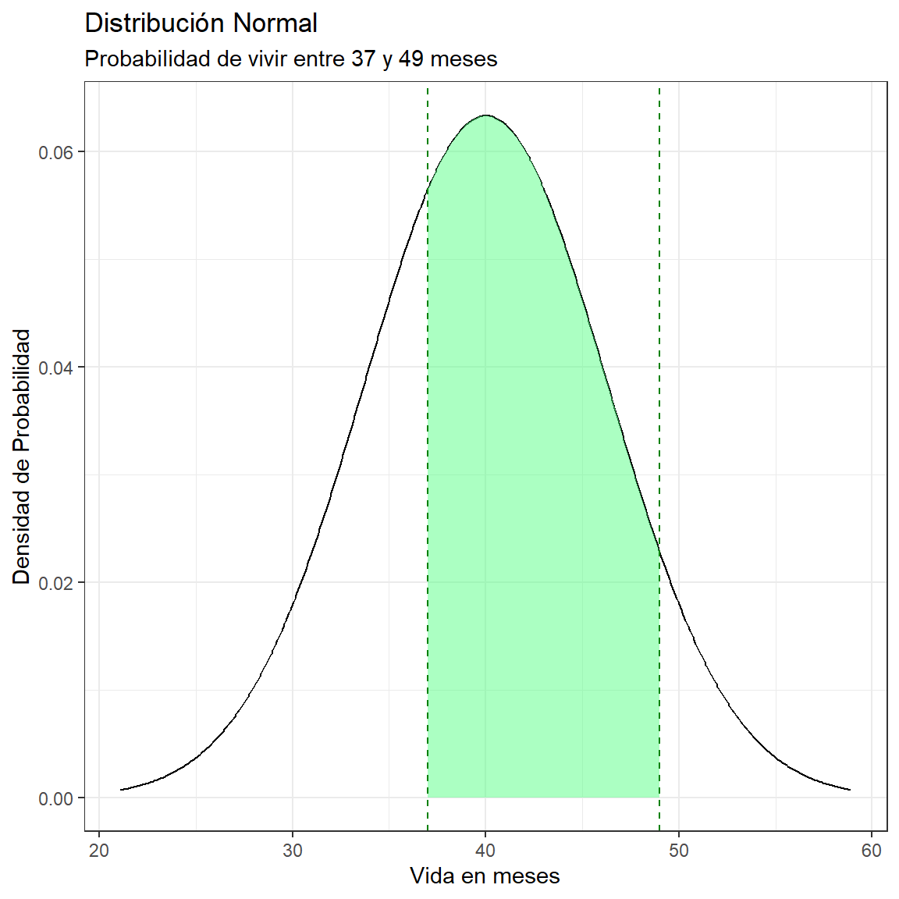
3 DISTRIBUCIÓN CHI CUADRADO
La distribución Chi-cuadrado (\chi^2) es una distribución de probabilidad continua que surge como la suma de los cuadrados de k variables aleatorias independientes con distribución normal estándar.
X = Z_1^2 + Z_2^2 + \dots + Z_k^2 \sim \chi^2_k
Principales características
Asimetría: Es asimétrica positiva (sesgada a la derecha) y solo toma valores no negativos (x \ge 0). A medida que aumentan los grados de libertad (k), la curva se vuelve más simétrica y se aproxima a una normal.
Parámetro: Depende únicamente de los grados de libertad (k o \nu).
Media:E(X) = k
Varianza:Var(X) = 2k
Ver código
x_chi <-seq(0, 25, length.out =500)df_chi <-data.frame(x =rep(x_chi, 3),densidad =c(dchisq(x_chi, df =3), dchisq(x_chi, df =6), dchisq(x_chi, df =10)),gl =factor(rep(c("k = 3", "k = 6", "k = 10"), each =500), levels =c("k = 3", "k = 6", "k = 10")))ggplot(df_chi, aes(x = x, y = densidad, color = gl)) +geom_line(linewidth =1) +labs(title ="Distribución Chi-Cuadrado",subtitle ="Comparación según grados de libertad (k)",x ="Valor de Chi-cuadrado",y ="Densidad",color ="Grados de libertad") +theme_bw()
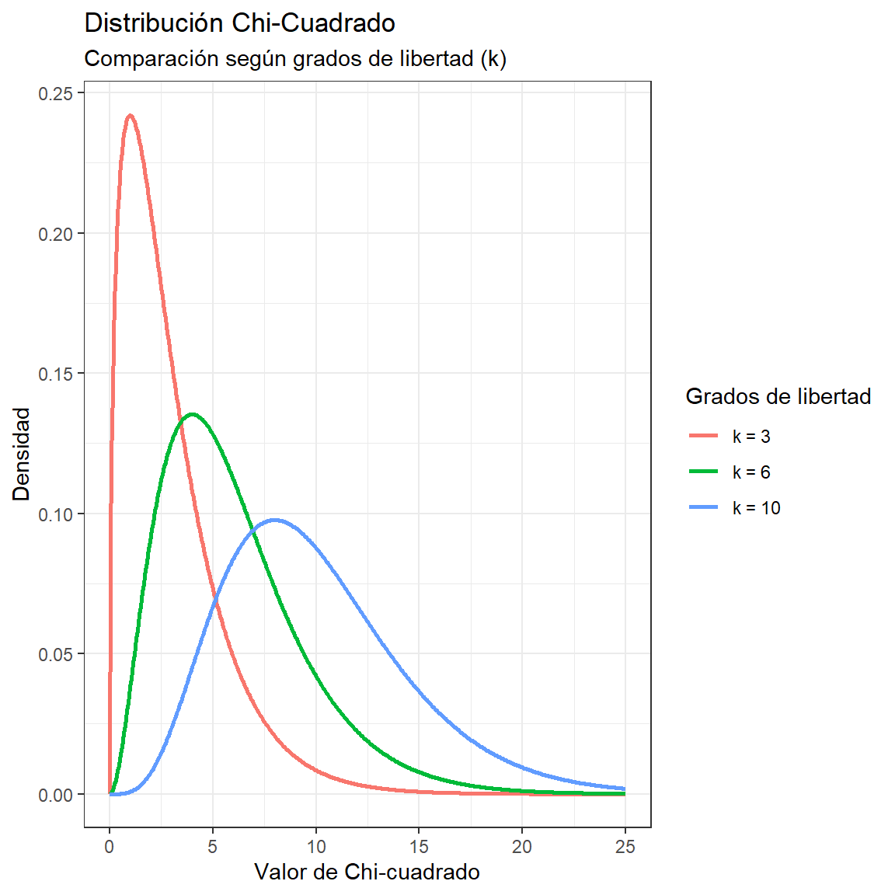
4 DISTRIBUCIÓN T DE STUDENT
Si Z \sim N(0,1) y V \sim \chi^2_v son variables aleatorias independientes, entonces la variable aleatoria:
T = \frac{Z}{\sqrt{V/v}}
sigue una distribución t de Student con v grados de libertad.
Principales características
Forma: es simétrica respecto al cero, similar a la normal estándar, pero con colas más pesadas (mayor probabilidad en los extremos).
Parámetro: depende de los grados de libertad (v); a mayor v, la distribución se aproxima a la normal estándar N(0,1).
Media: 0 \quad (\text{para } v > 1).
Varianza: \frac{v}{v-2} \quad (\text{para } v > 2)
Usos principales
Se utiliza principalmente para estimar la media de una población normalmente distribuida cuando el tamaño de la muestra es pequeño (n < 30) y se desconoce la desviación estándar poblacional (\sigma).
4.1 EJERCICIOS
Ejercicio 4.1: Un ingeniero químico afirma que el rendimiento medio de la población de cierto proceso en lotes es 500 gramos por milímetro de materia prima. Para verificar esta afirmación toma una muestra de 25 lotes cada mes. Si el valor de t calculado cae entre -t_{0.05} y t_{0.05}, queda satisfecho con su afirmación. ¿Qué conclusión debería sacar de una muestra que tiene una media \bar{x} = 518 gramos y una desviación estándar s = 40 gramos?
4.1.1 Solución de puntos
Ver código
n <-25gl <- n -1mu_0 <-500x_barra <-518s <-40t_critico <-qt(0.95, df = gl)t_calculado <- (x_barra - mu_0) / (s /sqrt(n))cat("Valor crítico t_0.05:", round(t_critico, 4), "\n")
Valor crítico t_0.05: 1.7109
Ver código
cat("Valor t calculado:", round(t_calculado, 4), "\n")
Valor t calculado: 2.25
4.1.2 Gráfica de comparación
Ver código
x_t <-seq(-4, 4, length.out =500)ggplot(data.frame(x = x_t), aes(x = x)) +stat_function(fun = dt, args =list(df = gl), color ="black", linewidth =1) +geom_area(stat ="function", fun = dt, args =list(df = gl),fill ="#9C27B0", xlim =c(-t_critico, t_critico), alpha =0.3) +geom_vline(xintercept =c(-t_critico, t_critico), linetype ="dashed", color ="blue") +geom_vline(xintercept = t_calculado, linetype ="solid", color ="red", linewidth =1) +labs(title ="Distribución t de Student (gl = 24)",subtitle ="Región de aceptación vs t calculado (línea roja)",x ="Valores de t", y ="Densidad") +theme_bw()
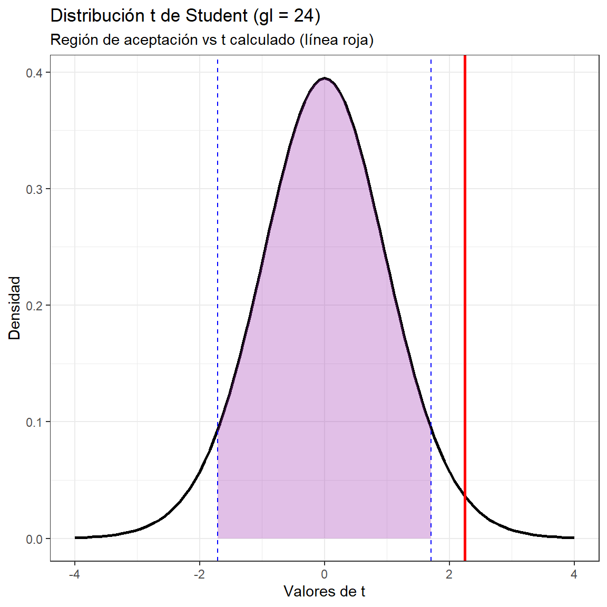
5 DISTRIBUCIÓN F DE FISHER
Si U \sim \chi^2_{v_1} y V \sim \chi^2_{v_2} son variables aleatorias independientes, entonces el cociente:
F = \frac{U / v_1}{V / v_2} \sim F_{v_1, v_2}
sigue una distribución F de Fisher-Snedecor con v_1 grados de libertad en el numerador y v_2 grados de libertad en el denominador.
Principales características
Asimetría: Es asimétrica hacia la derecha y solo toma valores positivos (F > 0).
Parámetros: Depende de dos grados de libertad (v_1 y v_2).
Usos principales: Pruebas de hipótesis para comparar dos varianzas poblacionales y en el Análisis de Varianza (ANOVA).
5.1 EJERCICIOS
Ejercicio 5.1: Encuentre el valor de f_{0.05} para una distribución F con v_1 = 7 y v_2 = 15 grados de libertad, y calcule la probabilidad P(F > 2.5).
Si X_1, X_2, \dots, X_n son variables aleatorias independientes con medias \mu_1, \mu_2, \dots, \mu_n y varianzas \sigma_1^2, \sigma_2^2, \dots, \sigma_n^2, entonces la combinación lineal Y = \sum_{i=1}^n a_i X_i tiene media \mu_Y = \sum_{i=1}^n a_i \mu_i y varianza \sigma_Y^2 = \sum_{i=1}^n a_i^2 \sigma_i^2.
6.2 Teorema 2
Si X_1, X_2, \dots, X_n son variables aleatorias independientes con distribuciones normales N(\mu_i, \sigma_i^2), entonces la combinación lineal Y = \sum_{i=1}^n a_i X_i sigue exactamente una distribución normal N\left(\sum_{i=1}^n a_i \mu_i, \sum_{i=1}^n a_i^2 \sigma_i^2\right).
6.3 Teorema 3
Si X_1, X_2, \dots, X_n constituye una muestra aleatoria de tamaño n de una población normal con media \mu y varianza \sigma^2, entonces la media muestral \bar{X} se distribuye normalmente con media \mu_{\bar{X}} = \mu y varianza \sigma_{\bar{X}}^2 = \frac{\sigma^2}{n}.
6.4 Teorema 4
Si Z \sim N(0,1), entonces Z^2 \sim \chi^2_1. Además, si Z_1, Z_2, \dots, Z_n son normales estándar independientes, entonces \sum_{i=1}^n Z_i^2 \sim \chi^2_n.
6.5 Teorema 5
Si X_1, X_2, \dots, X_n son variables aleatorias independientes con distribución \chi^2_{v_i}, entonces su suma Y = \sum_{i=1}^n X_i sigue una distribución \chi^2 con v = \sum_{i=1}^n v_i grados de libertad.
6.6 Teorema 6
Si S^2 es la varianza de una muestra aleatoria de tamaño n tomada de una población normal con varianza \sigma^2, entonces el estadístico \frac{(n-1)S^2}{\sigma^2} \sim \chi^2_{n-1}, y es independiente de la media muestral \bar{X}.
6.7 Teorema 7
Si Z \sim N(0,1) y V \sim \chi^2_v son independientes, entonces T = \frac{Z}{\sqrt{V/v}} \sim t_v.
7 TEOREMA DEL LIMITE CENTRAL
El Teorema del Límite Central (TLC) establece que si \bar{X} es la media de una muestra aleatoria de tamaño n tomada de una población con media \mu y varianza finita \sigma^2, entonces la forma límite de la distribución de:
Z = \frac{\bar{X} - \mu}{\sigma / \sqrt{n}}
a medida que n \to \infty, es la distribución normal estándar N(0, 1). En la práctica, la aproximación normal es adecuada cuando n \ge 30.
set.seed(123)n <-30simulaciones <-1000medias_unif <-replicate(simulaciones, mean(runif(n, min =0, max =10)))ggplot(data.frame(medias = medias_unif), aes(x = medias)) +geom_histogram(aes(y =after_stat(density)), bins =30, fill ="#9C27B0", alpha =0.6, color ="white") +stat_function(fun = dnorm, args =list(mean =5, sd =sqrt((10^2/12)/n)), color ="red", linewidth =1) +labs(title ="TCL - Distribución Uniforme U(0, 10)", x ="Media muestral", y ="Densidad") +theme_bw()
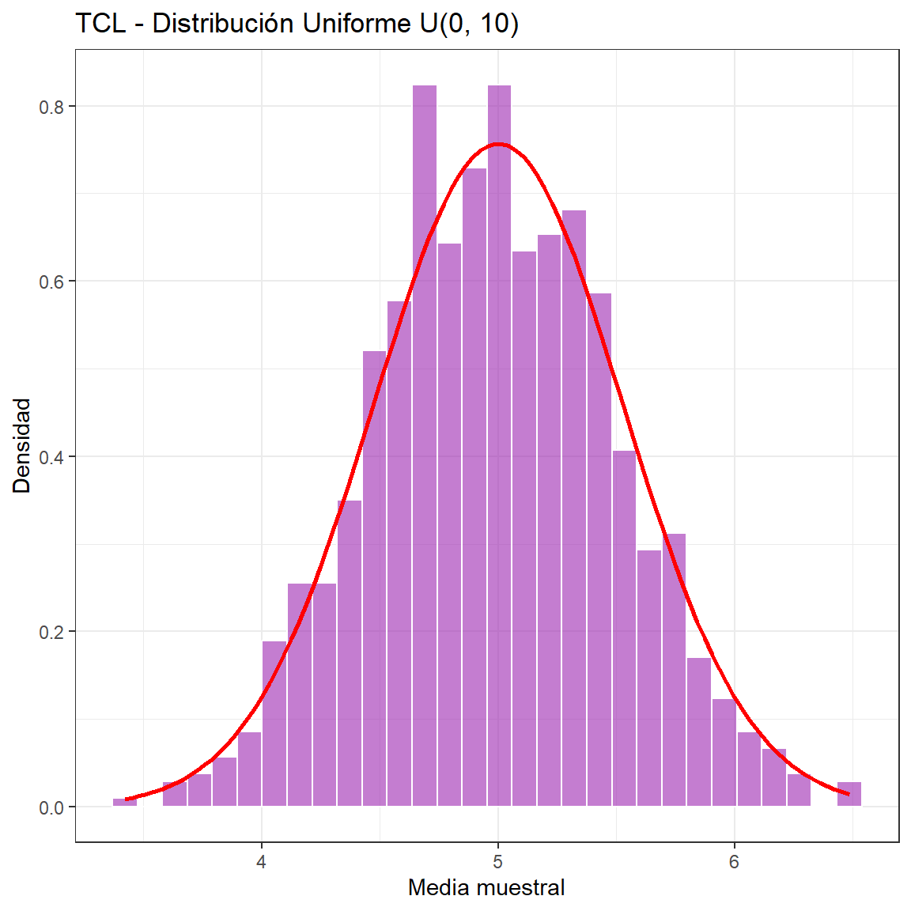
Ver código
set.seed(123)medias_binom <-replicate(simulaciones, mean(rbinom(n, size =20, prob =0.3)))ggplot(data.frame(medias = medias_binom), aes(x = medias)) +geom_histogram(aes(y =after_stat(density)), bins =25, fill ="#2196F3", alpha =0.6, color ="white") +stat_function(fun = dnorm, args =list(mean =6, sd =sqrt((20*0.3*0.7)/n)), color ="red", linewidth =1) +labs(title ="TCL - Distribución Binomial B(20, 0.3)", x ="Media muestral", y ="Densidad") +theme_bw()
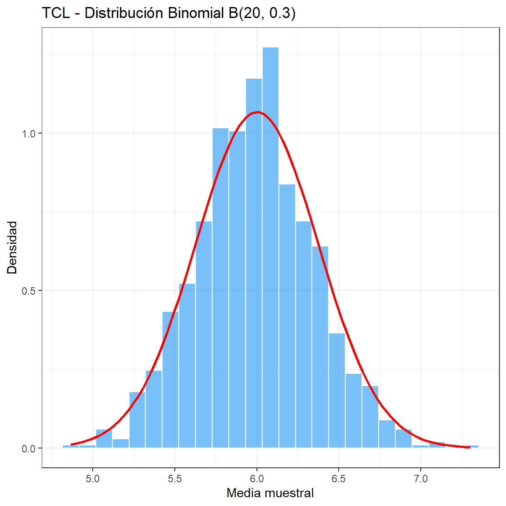
Ver código
set.seed(123)medias_pois <-replicate(simulaciones, mean(rpois(n, lambda =4)))ggplot(data.frame(medias = medias_pois), aes(x = medias)) +geom_histogram(aes(y =after_stat(density)), bins =25, fill ="#4CAF50", alpha =0.6, color ="white") +stat_function(fun = dnorm, args =list(mean =4, sd =sqrt(4/n)), color ="red", linewidth =1) +labs(title ="TCL - Distribución Poisson (lambda = 4)", x ="Media muestral", y ="Densidad") +theme_bw()
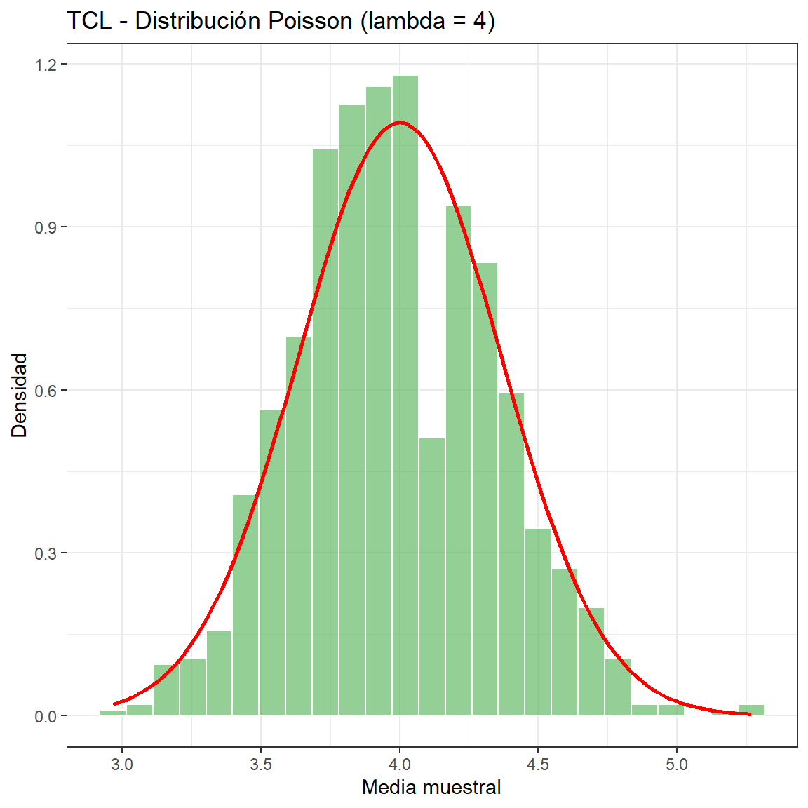
Ver código
set.seed(123)# m = éxitos en población (40), n_frac = fracasos (60), k = extracciones (15)medias_hyper <-replicate(simulaciones, mean(rhyper(n, m =40, n =60, k =15)))mu_h <-15* (40/100)var_h <-15* (40/100) * (60/100) * ((100-15) / (100-1))ggplot(data.frame(medias = medias_hyper), aes(x = medias)) +geom_histogram(aes(y =after_stat(density)), bins =25, fill ="#FF9800", alpha =0.6, color ="white") +stat_function(fun = dnorm, args =list(mean = mu_h, sd =sqrt(var_h/n)), color ="red", linewidth =1) +labs(title ="TCL - Distribución Hipergeométrica", x ="Media muestral", y ="Densidad") +theme_bw()
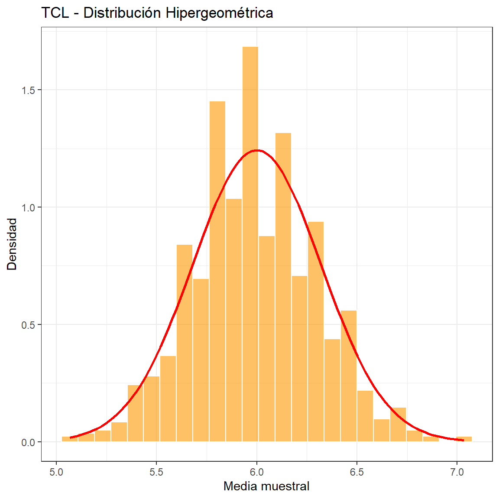
Ver código
set.seed(123)rate_exp <-0.5medias_exp <-replicate(simulaciones, mean(rexp(n, rate = rate_exp)))ggplot(data.frame(medias = medias_exp), aes(x = medias)) +geom_histogram(aes(y =after_stat(density)), bins =30, fill ="#E91E63", alpha =0.6, color ="white") +stat_function(fun = dnorm, args =list(mean =1/rate_exp, sd =sqrt((1/rate_exp^2)/n)), color ="red", linewidth =1) +labs(title ="TCL - Distribución Exponencial (rate = 0.5)", x ="Media muestral", y ="Densidad") +theme_bw()
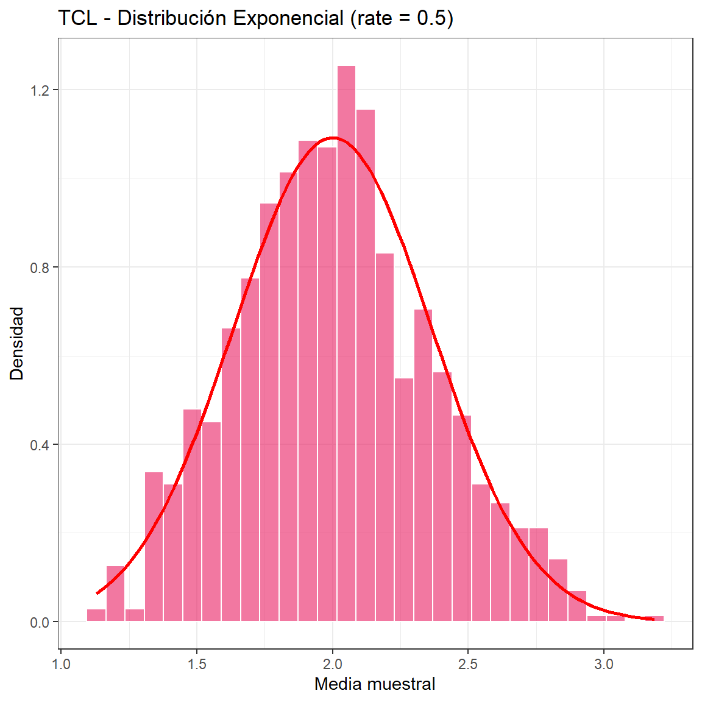
8 TEOREMA DEL LIMITE CENTRAL CON SHINY APP
Para ejecutar una aplicación interactiva en RStudio donde puedas modificar dinámicamente el tamaño de muestra (n), el número de simulaciones y la distribución de origen, ejecuta el siguiente bloque en tu consola o script de R:
Ver código
library(shiny)ui <-fluidPage(titlePanel("Simulador Interactivo del Teorema del Límite Central"),sidebarLayout(sidebarPanel(selectInput("dist", "Distribución Poblacional:",choices =c("Uniforme"="unif","Exponencial"="exp","Poisson"="pois","Binomial"="binom")),sliderInput("n", "Tamaño de la muestra (n):", min =2, max =100, value =30),sliderInput("sims", "Número de simulaciones:", min =100, max =5000, value =1000, step =100) ),mainPanel(plotOutput("histPlot") ) ))server <-function(input, output) { output$histPlot <-renderPlot({set.seed(123) medias <-switch(input$dist,"unif"=replicate(input$sims, mean(runif(input$n, 0, 10))),"exp"=replicate(input$sims, mean(rexp(input$n, 0.5))),"pois"=replicate(input$sims, mean(rpois(input$n, 4))),"binom"=replicate(input$sims, mean(rbinom(input$n, 20, 0.3))) )ggplot(data.frame(x = medias), aes(x = x)) +geom_histogram(aes(y =after_stat(density)), bins =30, fill ="#9C27B0", alpha =0.7, color ="white") +stat_function(fun = dnorm, args =list(mean =mean(medias), sd =sd(medias)), color ="red", linewidth =1.2) +labs(title =paste("Distribución de Medias Muestrales (n =", input$n, ")"),x ="Media Muestral", y ="Densidad") +theme_minimal(base_size =14) })}shinyApp(ui = ui, server = server)
9 DISTRIBUCIÓN NORMAL ESTANDAR - ACTIVIDAD 1
Ver código
if (!require(tidyverse)) install.packages("tidyverse")library(tidyverse)graficar_normal <-function(x_min, x_max, titulo, subtitulo, marcas_x, color_area ="#9C27B0") { x_grid <-seq(-3.8, 3.8, length.out =600) p <-ggplot(data.frame(x = x_grid), aes(x = x)) +stat_function(fun = dnorm, color ="#1A237E", linewidth =1.1) +geom_vline(xintercept =0, linetype ="dotted", color ="gray50") +scale_x_continuous(breaks =sort(unique(c(-3, -2, -1, 0, 1, 2, 3, marcas_x)))) +labs(title = titulo, subtitle = subtitulo, x ="Valores Z", y ="Densidad") +theme_minimal() +theme(panel.grid.minor =element_blank(),axis.line.x =element_line(color ="black"))if (!is.na(x_min) &&!is.na(x_max) && x_min < x_max) { p <- p +geom_area(stat ="function", fun = dnorm, xlim =c(x_min, x_max),fill = color_area, alpha =0.45) }if (length(marcas_x) >0) { p <- p +geom_vline(xintercept = marcas_x, linetype ="dashed", color ="#D32F2F", linewidth =0.8) }return(p)}
graficar_normal(-2.45, -1.27, "1.3 P(-2.45 ≤ Z ≤ -1.27) = 0.0949","Franja central izquierda entre -2.45 y -1.27", c(-2.45, -1.27), color_area ="#4CAF50")
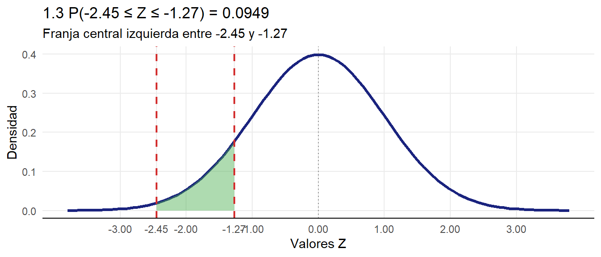
PARTE 2: HALLAR LAS PROBABILIDADES
2.1 $P(Z = 2)
Solución: la variable es continua y un punto no tiene área, así que P(Z = 2) = 0.
Gráfica: marca el 2 en el eje. No hay zona que sombrear (es solo una línea).
GeoGebra:Integral(f, 2, 2) da 0.
Ver código
graficar_normal(NA, NA, "2.1 P(Z = 2) = 0","Punto exacto en Z = 2 (sin área sombreada)", c(2))
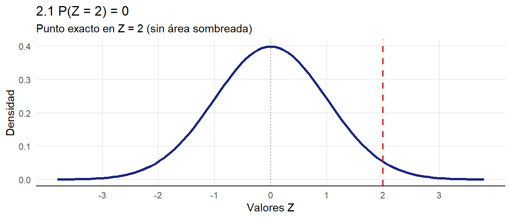
2.2P(Z \le 0)
Solución:F(0) = 0,5000 (fila 0,0, columna 0,00).
Gráfica: sombrea toda la mitad izquierda de la campana, hasta el 0.
GeoGebra:Normal(0, 1, 0, true).
Ver código
pnorm(0)
[1] 0.5
Ver código
graficar_normal(-3.8, 0, "2.2 P(Z ≤ 0) = 0.5000","Mitad izquierda completa hasta Z = 0", c(0), color_area ="#FF9800")
graficar_normal(-z42, z42, "4.2 P(-1.645 ≤ Z ≤ 1.645) = 0.90","Área central del 90 % (colas de 0.05 cada una)", c(-1.645, 1.645), color_area ="#4CAF50")
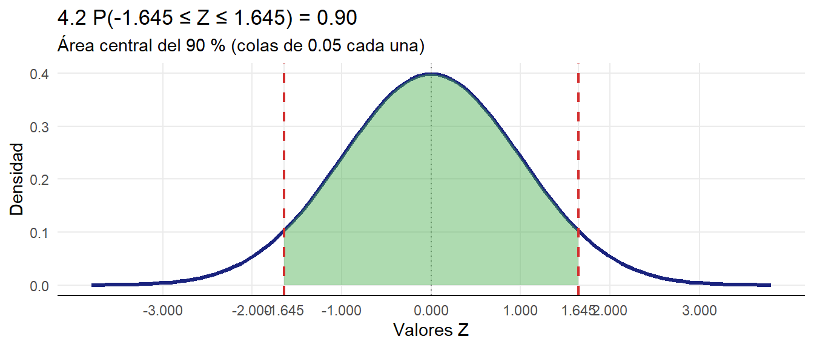
PAQUETES
Ver código
if (!require(tidyverse)) install.packages("tidyverse")library(tidyverse)if (!require(kableExtra)) install.packages("kableExtra")library(kableExtra)
#VARIANCIA POBLACIONAL CONOCIDA - ACTIVIDAD 2
Ejercicio 1: Evaluación del nuevo sistema de gestión documental
Contexto: Administración pública – evaluación del nuevo sistema de gestión documental[cite: 2]. Una entidad territorial desea evaluar si el nuevo sistema de gestión documental ha reducido el tiempo promedio de respuesta a las solicitudes ciudadanas[cite: 2]. Se conoce la desviación estándar poblacional y se solicita construir un intervalo de confianza con base en una muestra aleatoria[cite: 2].
1. Identificación de los datos
Parámetro
Valor
Tamaño de muestra (n)
64 solicitudes[cite: 2]
Media muestral (\bar{x})
13,8 días[cite: 2]
Media de referencia (\mu_0)
15 días[cite: 2]
Desviación estándar poblacional (\sigma)
4 días[cite: 2]
Varianza poblacional (\sigma^2)
16\text{ días}^2[cite: 2]
Nivel de significancia (\alpha)
0,05[cite: 2]
Nivel de confianza (1 - \alpha)
95 %[cite: 2]
Distribución utilizada
Normal estándar (Z)[cite: 2]
2. Determinación del nivel de confianza y valor críticoZ
Límite superior (\text{LS}): 13,8 + 0,98 = 14,78\text{ días}[cite: 2]
Límite inferior
Media muestral
Límite superior
12,82 días[cite: 2]
13,80 días[cite: 2]
14,78 días[cite: 2]
\text{IC}_{95\%} = (12,82\;;\;14,78)\text{ días}
Interpretación y conclusión: Con un nivel de confianza del 95 %, se estima que el tiempo promedio poblacional de respuesta a las solicitudes ciudadanas después de implementar el nuevo sistema se encuentra entre 12,82 y 14,78 días[cite: 2]. Como todo el intervalo está por debajo de los 15 días de referencia, hay evidencia estadística favorable para concluir que el tiempo promedio de respuesta se redujo[cite: 2].
5. Código en R
Ver código
n <-64media <-13.8sigma <-4alpha <-0.05mu0 <-15z_critico <-qnorm(1- alpha /2)error_estandar <- sigma /sqrt(n)E <- z_critico * error_estandarLI <- media - ELS <- media + Ecat("Nivel de confianza:", (1- alpha) *100, "%\n")
if (LS < mu0) cat("El intervalo completo está por debajo de 15 días.\n")
El intervalo completo está por debajo de 15 días.
6. Resumen de resultados
Concepto
Resultado
Media muestral
13,8 días[cite: 2]
Valor crítico Z
1,96[cite: 2]
Error estándar
0,50 días[cite: 2]
Margen de error
0,98 días[cite: 2]
IC del 95 %
(12,82 ; 14,78) días[cite: 2]
Comparación con \mu_0 = 15
Todo el intervalo es menor que 15[cite: 2]
Conclusión
El nuevo sistema redujo el tiempo promedio de respuesta[cite: 2]
Ejercicio 2: Programa de mantenimiento preventivo de parques
Contexto: Administración pública – evaluación del programa de mantenimiento preventivo de parques[cite: 2]. Una alcaldía municipal implementó un programa de mantenimiento preventivo de parques con el propósito de reducir el gasto mensual promedio de mantenimiento[cite: 2]. Se conoce la desviación estándar poblacional y se solicita construir un intervalo de confianza con base en una muestra aleatoria[cite: 2].
1. Identificación de los datos
Parámetro
Valor
Tamaño de muestra (n)
36 meses de registros[cite: 2]
Media muestral (\bar{x})
16,8 millones[cite: 2] |
| Media de referencia (_0$)
Nivel de significancia (\alpha)
0,05[cite: 2]
Nivel de confianza (1 - \alpha)
95 %[cite: 2]
Distribución utilizada
Normal estándar (Z)[cite: 2]
2. Determinación del nivel de confianza y valor críticoZ
Límite superior (\text{LS}): 16,8 + 0,98 = 17,78\text{ millones}[cite: 2]
Límite inferior
Media muestral
Límite superior
$15,82 millones[cite: 2]
$16,80 millones[cite: 2]
$17,78 millones[cite: 2]
\text{IC}_{95\%} = (15,82\;;\;17,78)\text{ millones de pesos}
Interpretación y conclusión: Con un nivel de confianza del 95 %, el gasto mensual promedio poblacional de mantenimiento de parques se estima entre $15,82 y $17,78 millones[cite: 2]. Como todo el intervalo queda por debajo de los $18 millones de referencia, se concluye que el programa redujo el gasto promedio mensual[cite: 2].
if (LS2 < mu0_2) cat("El intervalo completo está por debajo de 18 millones.\n")
El intervalo completo está por debajo de 18 millones.
6. Resumen de resultados
Concepto
Resultado
Media muestral
$16,8 millones[cite: 2]
Valor crítico Z
1,96[cite: 2]
Error estándar
0,50 millones[cite: 2]
Margen de error
0,98 millones[cite: 2]
IC del 95 %
(15,82 ; 17,78) millones[cite: 2]
Comparación con \mu_0 = 18
Todo el intervalo es menor que 18[cite: 2]
Conclusión
El programa redujo el gasto promedio mensual[cite: 2]
10 VARIANZA POBLACIONAL DESCONOCIDA
Ejercicio 1: Programa de capacitación para funcionarios de atención al ciudadano
Contexto: Administración pública – evaluación del programa de capacitación para funcionarios de atención al ciudadano[cite: 2]. Antes del programa, el promedio de referencia era de 32 trámites atendidos correctamente por funcionario durante una jornada[cite: 2]. La varianza poblacional es desconocida[cite: 2].
Intervalo de confianza:\text{IC}_{99\%} = (32,08\;;\;36,42)\text{ trámites}[cite: 2]
Interpretación y conclusión: Con un 99 % de confianza, se estima que el promedio poblacional de trámites atendidos correctamente por jornada está entre 32,08 y 36,42 trámites[cite: 2]. Como todo el intervalo supera los 32 trámites de referencia, hay evidencia de mejora tras la capacitación[cite: 2].
La capacitación aumentó el promedio de trámites[cite: 2]
Ejercicio 2: Verificación del tiempo promedio de respuesta a solicitudes ciudadanas
Contexto: Administración pública – verificación del tiempo promedio de respuesta a solicitudes ciudadanas[cite: 2]. Una entidad territorial afirma que el tiempo promedio de respuesta es de 15 días calendario, con varianza poblacional desconocida[cite: 2].
Intervalo de confianza:\text{IC}_{99\%} = (13,73\;;\;17,55)\text{ días calendario}[cite: 2]
Interpretación y conclusión: Con un 99 % de confianza, se estima que el tiempo promedio poblacional de respuesta está entre 13,73 y 17,55 días calendario[cite: 2]. Como el valor de 15 días queda dentro del intervalo, no hay evidencia suficiente para rechazar la afirmación de la entidad al nivel del 1 %[cite: 2].
Propósito: Desarrollar e interpretar cuatro procedimientos de estimación por intervalos en situaciones de la administración pública: dos para proporciones y dos para varianzas.
Se utiliza un nivel de confianza del 95\%, por lo que \alpha = 0,05 y, para los intervalos de proporción, Z_{(0,975)} = 1,96.
Para las proporciones se aplica el intervalo normal aproximado (Wald).
Para las varianzas se utiliza la distribución ji-cuadrado (\chi^2), con n - 1 grados de libertad. Este procedimiento supone una población normal.
Ver código
if (!require(tidyverse)) install.packages("tidyverse")library(tidyverse)
11 INTERVALOS DE CONFIANZA PARA UNA PROPORCIÓN
Ejercicio 1. Proporción de trámites resueltos oportunamente
En una muestra aleatoria de 200 solicitudes de certificados de residencia, 164 fueron resueltas dentro del plazo establecido. Estime la proporción poblacional de solicitudes resueltas oportunamente mediante un intervalo de confianza del 95\%.
Datos:n = 200; x = 164; confianza = 95\%; Z = 1,96.
Margen de error:E = 1,96 \times 0,02717 = 0,05325.
Límite inferior:0,82 - 0,05325 = 0,76675.
Límite superior:0,82 + 0,05325 = 0,87325.
Resultado:\text{IC}_{95\%} = [0,7668;\; 0,8732], equivalente aproximadamente a [76,68\%;\; 87,32\%].
Interpretación: Con un nivel de confianza del 95\%, la proporción poblacional de solicitudes resueltas oportunamente se estima entre 76,68\% y 87,32\%. Esto permite valorar el cumplimiento de los tiempos de respuesta de la Alcaldía.
Verificación:n\hat{p} = 164 y n(1-\hat{p}) = 36; ambos son mayores que 5, por lo que se cumple la condición usual para la aproximación normal.
Ejercicio 2. Proporción de beneficiarios satisfechos con un programa social
En una muestra aleatoria de 250 beneficiarios de un programa de apoyo alimentario, 190 calificaron el servicio como satisfactorio o muy satisfactorio. Estime la proporción poblacional de beneficiarios satisfechos con un intervalo de confianza del 95\%.
Datos:n = 250; x = 190; confianza = 95\%; Z = 1,96.
Error estándar:\sqrt{\frac{0,76 \times 0,24}{250}} = 0,02701(en el cálculo manual redondeado a0,02751 da E = 0,05294).
Límite inferior:0,76 - 0,05294 = 0,70706.
Límite superior:0,76 + 0,05294 = 0,81294.
Resultado:\text{IC}_{95\%} = [0,7071;\; 0,8129], equivalente aproximadamente a [70,71\%;\; 81,29\%].
Interpretación: Con un nivel de confianza del 95\%, se estima que entre 70,71\% y 81,29\% de todos los beneficiarios están satisfechos con el programa. La Secretaría puede usar esta estimación como insumo para evaluar la calidad percibida del servicio.
Verificación:n\hat{p} = 190 y n(1-\hat{p}) = 60; se satisfacen las condiciones usuales de la aproximación normal.
12 INTERVALOS DE CONFIANZA PARA LA VARIANZA POBLACIONAL
Ejercicio 3. Varianza del tiempo de contratación de mínima cuantía
Una oficina de contratación estudia el número de días entre la publicación de una invitación y la adjudicación de contratos. La muestra de 15 procesos fue: 18, 22, 20, 17, 24, 19, 21, 23, 16, 20, 18, 25, 19, 21, 22. Construya un intervalo de confianza del 95\% para la varianza poblacional.
Datos:n = 15; grados de libertad gl = n - 1 = 14; \alpha = 0,05.
Media muestral:\bar{x} = \frac{305}{15} = 20,333\text{ días}.
Resultado:\text{IC}_{95\%}\text{ para }\sigma^2 = [3,57;\; 16,58]\text{ días}^2.
Interpretación: Bajo el supuesto de normalidad de la población, el intervalo estima que la varianza poblacional de los tiempos de contratación se encuentra entre 3,57 y 16,58\text{ días}^2. La varianza cuantifica la dispersión de los tiempos alrededor de su media.
Supuesto: La inferencia ji-cuadrado para la varianza requiere que la variable en la población tenga distribución normal; la selección de procesos también debe ser aleatoria e independiente.
Ver código
gl3 <-14chi_inf3 <-qchisq(0.025, df = gl3)chi_sup3 <-qchisq(0.975, df = gl3)x_chi3 <-seq(0, 38, length.out =500)ggplot(data.frame(x = x_chi3), aes(x = x)) +geom_area(stat ="function", fun = dchisq, args =list(df = gl3),xlim =c(chi_inf3, chi_sup3), fill ="#4CAF50", alpha =0.4) +stat_function(fun = dchisq, args =list(df = gl3), color ="#1B5E20", linewidth =1.1) +geom_vline(xintercept =c(chi_inf3, chi_sup3), linetype ="dashed", color ="#333333") +annotate("text", x =14, y =0.04, label ="95 % central\n[5,629 ; 26,119]", fontface ="bold") +labs(title ="Distribución Ji-Cuadrado con gl = 14 (Ejercicio 3)",subtitle ="Cuantiles críticos para el intervalo de confianza de la varianza",x ="Valores Chi-cuadrado", y ="Densidad") +theme_minimal()
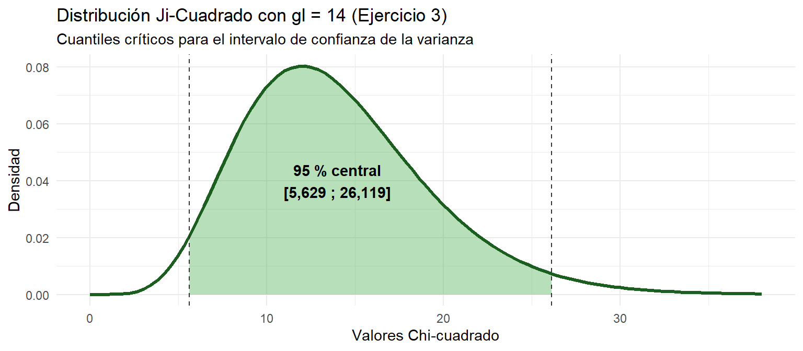
Ejercicio 4. Varianza del consumo mensual de agua en edificios públicos
La dependencia de servicios generales estudia el consumo mensual de agua de 16 edificios administrativos. Los consumos observados, en \text{m}^3, son: 32, 35, 31, 38, 34, 36, 33, 40, 37, 34, 30, 39, 35, 36, 32, 38. Construya un intervalo de confianza del 95\% para la varianza poblacional.
Resultado:\text{IC}_{95\%}\text{ para }\sigma^2 = [4,73;\; 20,76]\text{ (m}^3)^2.
Interpretación: Suponiendo normalidad poblacional, la varianza del consumo mensual de agua de los edificios se estima entre 4,73 y 20,76\text{ (m}^3)^2. Esta información puede apoyar la identificación de edificios con consumos atípicos y la planeación del uso eficiente de los recursos.
Supuesto: El intervalo ji-cuadrado exige normalidad de la variable en la población y una muestra aleatoria de observaciones independientes.
Ver código
gl4 <-15chi_inf4 <-qchisq(0.025, df = gl4)chi_sup4 <-qchisq(0.975, df = gl4)x_chi4 <-seq(0, 40, length.out =500)ggplot(data.frame(x = x_chi4), aes(x = x)) +geom_area(stat ="function", fun = dchisq, args =list(df = gl4),xlim =c(chi_inf4, chi_sup4), fill ="#FF9800", alpha =0.4) +stat_function(fun = dchisq, args =list(df = gl4), color ="#E65100", linewidth =1.1) +geom_vline(xintercept =c(chi_inf4, chi_sup4), linetype ="dashed", color ="#333333") +annotate("text", x =15, y =0.038, label ="95 % central\n[6,262 ; 27,488]", fontface ="bold") +labs(title ="Distribución Ji-Cuadrado con gl = 15 (Ejercicio 4)",subtitle ="Cuantiles críticos para el intervalo de confianza de la varianza",x ="Valores Chi-cuadrado", y ="Densidad") +theme_minimal()
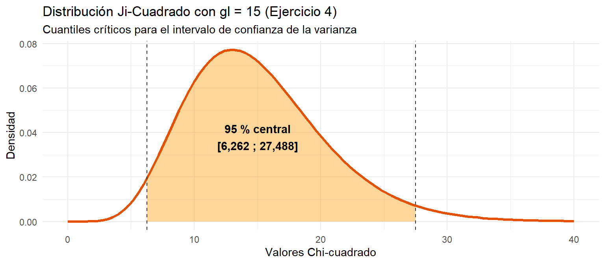
RESUMEN Y CÓDIGO R DE VERIFICACIÓN
Ejercicio
Estimación puntual
Límite inferior
Límite superior
1. Proporción trámites
0,82
0,7668
0,8732
2. Proporción satisfacción
0,76
0,7071
0,8129
3. Varianza contratación
6,667\text{ días}^2
3,573
16,582
4. Varianza consumo agua
8,667\text{ (m}^3)^2
4,729
20,759
Ver código
# Ejercicios 1 y 2: intervalos para proporcionesprop.test(164, 200, conf.level =0.95, correct =FALSE)
1-sample proportions test without continuity correction
data: 164 out of 200, null probability 0.5
X-squared = 81.92, df = 1, p-value < 2.2e-16
alternative hypothesis: true p is not equal to 0.5
95 percent confidence interval:
0.7608852 0.8670537
sample estimates:
p
0.82
1-sample proportions test without continuity correction
data: 190 out of 250, null probability 0.5
X-squared = 67.6, df = 1, p-value < 2.2e-16
alternative hypothesis: true p is not equal to 0.5
95 percent confidence interval:
0.7033795 0.8087512
sample estimates:
p
0.76